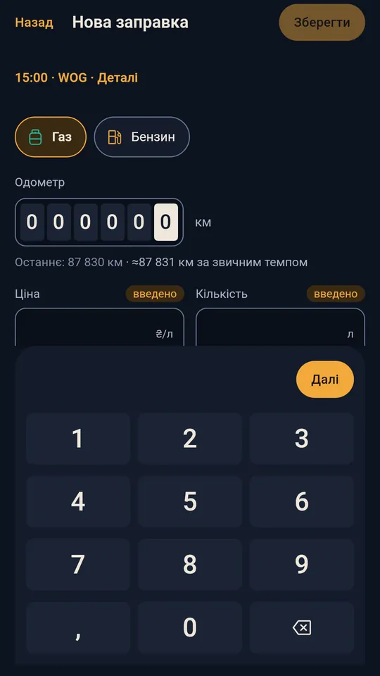

01 · Заправки
Заправка менш ніж за десять секунд
Своя цифрова клавіатура, ціна «як минулого разу» в один дотик, і сума рахується сама. Ціна ніколи не перепише те, що ввели ви.
- Ціна, кількість і сума: введіть дві, третя порахується
- Повний бак, неповна заправка чи пропуск — окремо
- Попередження, коли число дивне, але ніколи не заборона